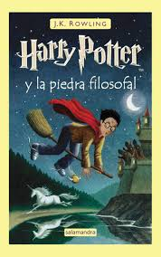
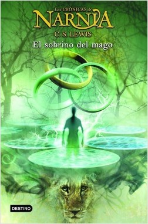
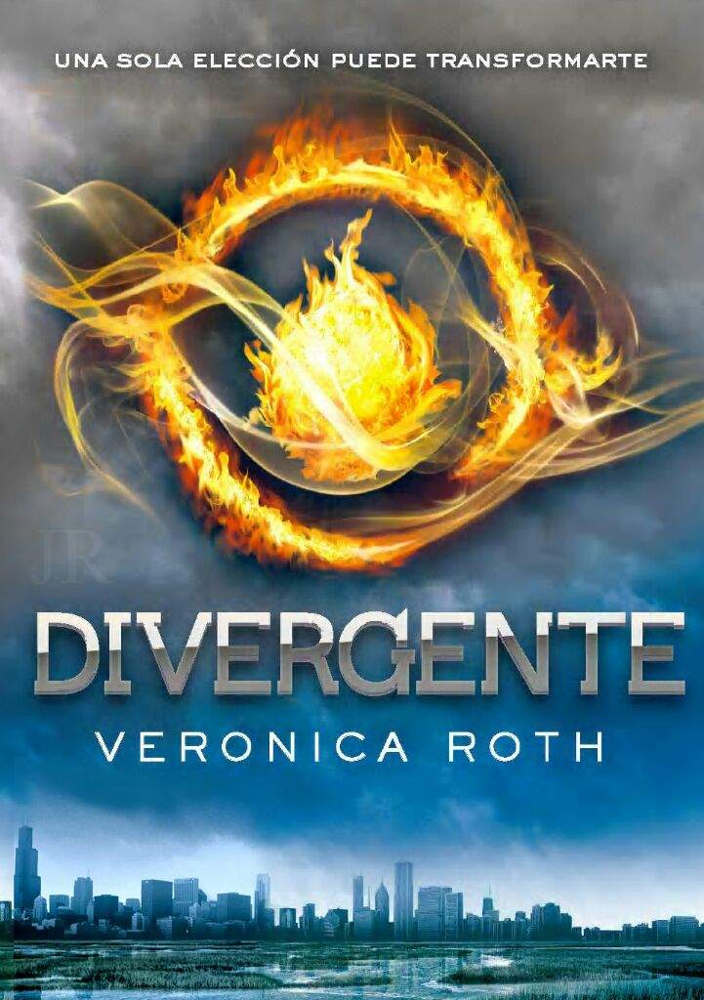
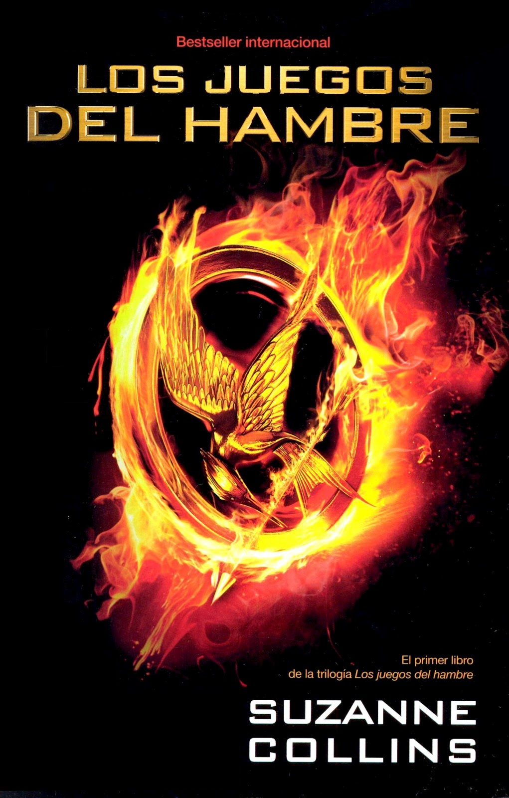
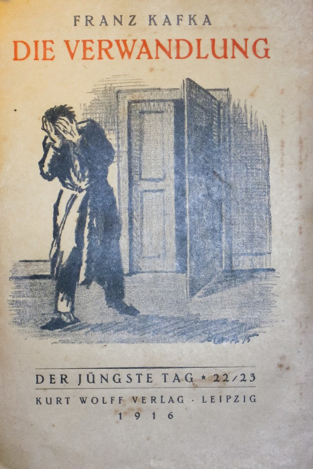

Harry Potter y la piedra filosofal, es el primer libro de la serie literaria Harry Potter, escrito por la autora británica J. K. Rowling en 1997, que supuso además el debut de Rowling como escritora profesional.
Harry Potter crece en la casa de sus tíos, los Dursley, quienes le ocultan su verdadera historia familiar; al cumplir Harry once años de edad, empiezan a llegarle cartas de remitente desconocido, que van aumentando en número a medida que sus tíos no dejan que las abra. Las mismas traen la noticia de que el niño ha sido admitido en el Colegio Hogwarts de Magia y Hechicería, ya que, al igual que sus padres, tiene poderes mágicos
Se descubre entonces que los Potter no murieron en un accidente de coche como se le había dicho a Harry, sino que habían sido asesinados en la noche de Halloween por un hechicero tenebroso conocido como lord Voldemort, quien había aterrorizado a la comunidad mágica británica años atrás. Sin embargo, algo ocurrió esa noche: Voldemort consiguió matar al matrimonio Potter pero no pudo asesinar al bebé, perdió su cuerpo y le dejó al niño una cicatriz permanente en forma de rayo en su frente.
Link de descarga del libro:
harry potter 1: link de descarga
Esta obra fue escrita en 1959 y publicada en 1955. Es la sexta en el orden de publicación, pero es la primera en el orden cronológico. Por consiguiente es un ejemplo de una precuela, e incluye algunas referencias a los libros publicados previamente, en especial a The Lion, the Witch and the Wardrobe. En las recientes publicaciones, los libros se han reordenado cronológicamente, teniendo como primero a El sobrino del mago.
La historia comienza a finales del siglo XIX, en Londres, con dos niños: Digory Kirke y Polly Plummer, los cuales eran vecinos. Digory se había mudado a la casa de sus tíos debido a una enfermedad que estaba matando a su madre, y se van haciendo amigos con el transcurso del verano. Un día, mientras recorrían el ático de las casas, tomaron una puerta equivocada y se encontraron al tío Andrew (tío de Digory) en su estudio. El tío Andrew, un cínico malévolo, que se consideraba a sí mismo como mago, engaña a Polly para que se ponga un anillo amarillo, lo que ocasiona que ésta desaparezca, víctimas del poder de unos anillos mágicos, son arrojados a otro mundo en el que una malvada hechicera intenta convertirlos en sus esclavos. Pero entonces aparece Aslan y crea Narnia, un mundo poblado por seres mitológicos, animales parlantes y brujas malvadas. Las Crónicas de Narnia es un clásico de la literatura infantil.
Link de descarga
harry potterFue publicada el 25 de abril del 2011 es la Divergente es la novela debut de la autora estadounidense Veronica Roth y es la primera entrega de una trilogía.
Una futurista ciudad de Chicago tiene la población dividida en facciones, grupos de personas con singulares valores culturales y conductas. Hay cinco facciones diferentes de la ciudad: Verdad(La sinceridad), Erudición(La inteligencia) , Cordialidad(Los pacíficos), Osadía(La valentía),Abnegación(Los altruistas).
La protagonista, Beatrice Prior, llamada más tarde "Tris", se crio en Abnegación, donde la generosidad se mantiene por encima de todo. La generosidad no viene naturalmente de Beatrice, sino de la enseñanza de sus padres. Ella se siente sola y oprimida, rodeada de gente que no piensa como ella. Cuando los jóvenes cumplen dieciséis años deben asistir a una Prueba de Aptitud la cual determina a qué facción pertenece cada uno, eligiendo vivir en otra facción o quedarse con sus padres. La prueba consiste en una simulación en la cual duermen a los adolescentes con un líquido especializado para hacerlos soñar. Para su sorpresa, Tris descubre que es capaz de manipular las simulaciones y tomar decisiones prohibidas, después se entera de que es una Divergente (persona capaz de manipular las simulaciones). Ella no encaja en ninguna de las facciones, ya que tiene aptitud igual para tres facciones diferentes (Abnegación, Osadía, y Erudición), lo que la aterroriza. Beatrice tiene que sobrevivir siendo una Divergente, lo cual está prohibido.
link de descarga
divergente pdfEscrito por la autora estadounidense Suzanne Collins. La editorial Scholastic Press lo publicó el 14 de septiembre de 2008. Se trata de una novela de aventura y ciencia ficción narrada en primera persona desde la perspectiva de Katniss Everdeen, una adolescente de dieciséis años que vive en Panem, una nación postapocalíptica ubicada en lo que anteriormente era América del Norte. El libro muestra en mayor parte las experiencias vividas por ella en «Los Juegos del Hambre», un evento anual realizado en Panem donde un chico y una chica de cada distrito con edades comprendidas entre los doce y los dieciocho años deberán luchar a muerte entre ellos mientras son observados por televisión nacional.
link de descarga
juegos del hambre pdfLa metamorfosis es una narración autoría de Franz Kafka, publicada en 1915, que cuenta la historia de la transformación de Gregorio Samsa en un monstruoso insecto, y del drama familiar que, a raíz de este acontecimiento, se desata.
Su título original en alemán es Die Verwandlung, que podría traducirse como ‘la transformación’. No obstante, en español se ha optado por designarlo como 'metamorfosis', palabra que tiene un componente mítico asociado.
link de descarga
metamorfosis pdf